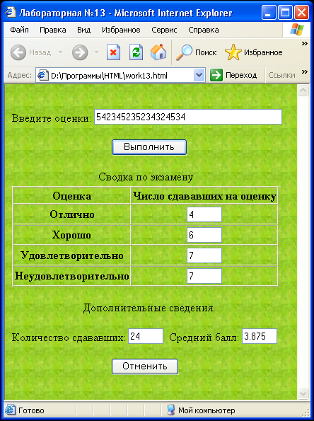

Сибирский государственный университет
телекоммуникаций и информатики
Лабораторные задания по курсу
"Введение в Интернет"
Лабораторная работа N 2.8
Сводка по результатам экзамена
Задание
Создайте форму, состоящую из:
- текстового поля для ввода оценок;
- кнопки "Выполнить", по нажатию которой на основе строки оценок вычисляется:
- число сдавших на отлично, хорошо, удовлетворительно и неудовлетворительно;
- общее количество сдававших;
- средний балл;
- кнопки "Отменить", по нажатию которой производится отмена произведенных вычислений.
Это должно выглядить приблизительно так:

Примечание. Реализовать контроль правильности ввода оценок.